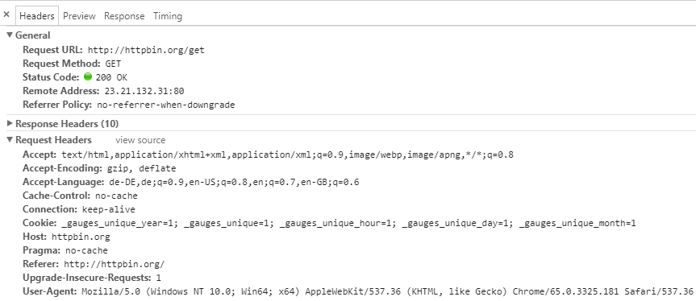
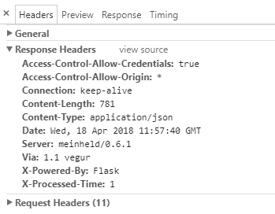

| Version 6.0.3 |
Mit QF-Test Version 4.2 wurde die Möglichkeit eingeführt Webdienste zu testen. Bei HTTP Requests handelt es sich um eine Technologie, die eher für Entwickler und/oder Programme gedacht sind. Das Aufnehmen einer Browser HTTP Anfrage und das anschließende Konvertieren in eine Server HTTP Anfrage ist zwar technisch möglich, macht aber oft nur bedingt Sinn. Daher wird empfohlen, dass Sie die Dokumentation des zu testenden Webdienstes kennen und nutzen.
Der Knoten 'Server HTTP Request' kann genutzt werden um beliebige HTTP Anfragen zu verschicken.
Webdienste und Webseiten benutzen das Hypertext Transfer Protocol (kurz HTTP). Dieses Protokoll stellt einen textbasierten Standard dar, der aus Anfragen und Antworten besteht. Dieser sehr nützliche und überraschend kurze Internetstandard kann hier eingesehen werden:
Hypertext Transfer Protocol -- HTTP/1.1
HTTP Authentication, 2 Basic Authentication Scheme
Eine Liste der aktuell unterstützen Anfrage Methoden
|
|
|
||||||||||
|
| Tabelle 19.1: Unterstützte HTTP Methoden | ||||||||||
Lassen Sie uns eine einfache GET Anfrage eines Browsers analysieren. Wenn Sie eine URL in die Adresszeile des Browsers
eingeben wird eine solche HTTP Anfrage automatisch vom Browser erzeugt. Mit Hilfe der Web Entwicklertools (zum Beispiel in Chrome)
kann die abgesendete Anfrage angezeigt werden. Die Anfrage besteht hierbei aus den Teilen Header, der URL und
der Payload (body).
Die Payload ist optional und kann z.B. bei POST/PUT Anfragen verwendet werden.
|
|  | ||
|
| Abbildung 19.1: Die vom Browser abgesetzte HTTP GET Anfrage | ||
Die Antwort des Servers besteht aus einem Response code, einem Header und dem optionaler Payload.
|
|  | ||
|
| Abbildung 19.2: Die GET Antwort des Webservers | ||
Bei der Verwendung des HTTP Server Request Knotens muss darauf geachtet werden, dass alle benötigten Daten in den dafür vorgesehenen
Attributen spezifiziert werden, also URL, Header und Payload. Wenn Sie Teile der Antwort des Webservers benötigen, sollten Sie einen
entsprechenden Variablename in das jeweilige Attribut unter "Variablen für die Antwort des Servers" eintragen.
Beispiele für Verwendung des HTTP Server Request Knoten befinden sich unter demo/webservices in der Beispieltestsuite
webservice_testing.qft.
Die Beispiele wurden mit Hilfe eines HTTP Proxies erstellt. Beispiele für solche Proxies sind Charles (https://www.charlesproxy.com/) oder seine freie Alternative James (https://github.com/james-proxy/james).
| Letzte Änderung: 6.9.2022 Copyright © 1999-2022 Quality First Software GmbH |